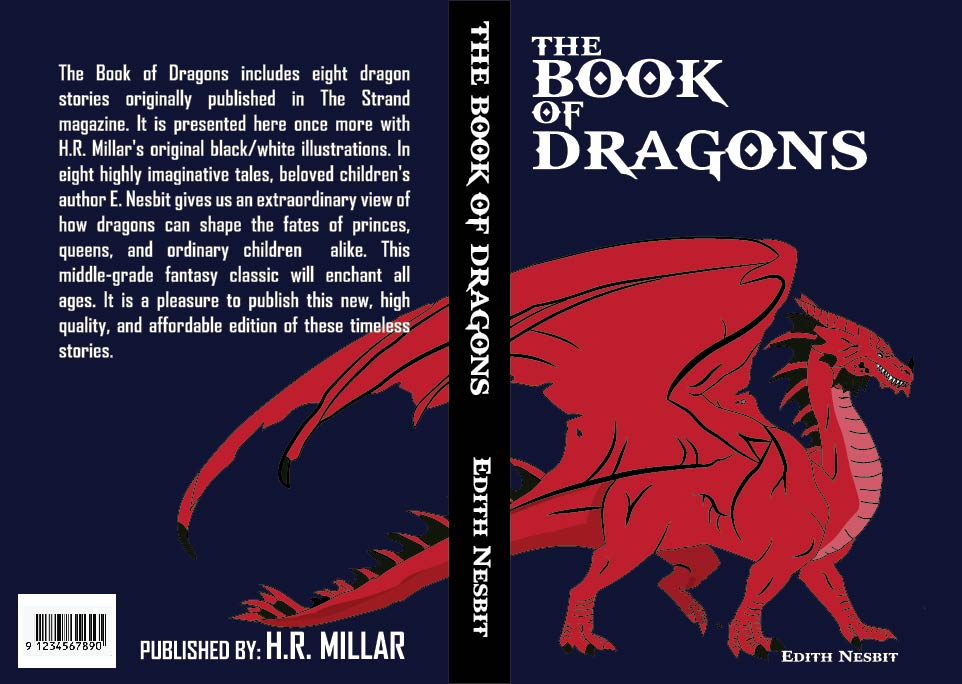

I am a somebody who wanted to learn something intresting i use to work in construction and i never gave going to college a thought cause i thought it would be a waste and i honestly never fully thought i could do it especially not bieng full blooded american i always sufferd with a launguage barrier from spanish at home and english at school i never got the hang of niether of them and i do have a speech problem where id say something but it wouldnt make sense(probably doing it rn) at some point i thought i was not gonna be anybody in life just some guy working from 6am to 6pm i dont have a social life dont have any friends i grew up bieng shy and insecure i was the type of guy that would never talk unless spoken to other than that id always stay quiet and keep my head down until one day i woke up and decided i didnt want that life i have the oppurtunity to go to college and i decided to take it. i sat down and started to explore my options i had a couple of things, one of them was bieng a architech/egineneer but to be honest i thought that was gonna be really complicated but well payed another one was becoming a chef i like cooking i find pretty entertaining how some ingredients can become something spectacular, another one was becoming a doctor but that quickly went out the window. I had hit a wall and did not know what to choose until my brother suggested to take a look into graphic design he explained what it was and it caught my intrest so i looked it up and thats when i stumbled across F.I.R.S.T institute i looked at there website and that same day i applied and the very next day i got a call from robert which im pretty sure he was a recruiter he gave me a phone call tour and im not gonna lie i was nervous but from that moment on i got hooked and he help me all the through until i got a phone call saying i was accpeted he asked me what i felt and i didnt know how to describe it i felt like if i had acomplish something big in my life and now im here learning hoping to land a nice paying job.
